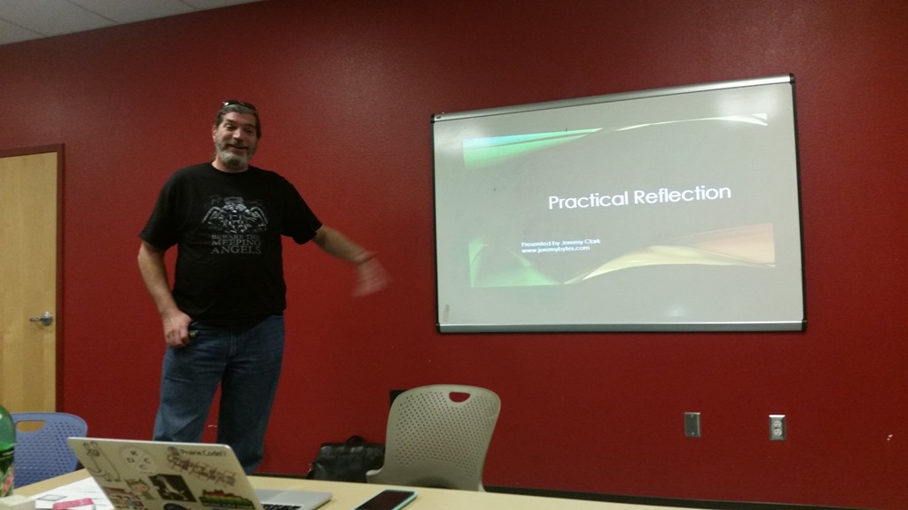

Tag: community
Developer on Fire
Posted by bsstahl on 2018-12-13 and Filed Under: general
I was recently interviewed by Dave Rael (@raelyard) for his Developer on Fire Podcast. I had a great time talking with Dave about a lot of different things, both professional and personal, and got to name-drop just a few of the many people who have been a part of my journey over the years.
I also took the opportunity to talk about a few things that have been on my mind:
- The upcoming AZGiveCamp Event scheduled for March 2019
- Some of the giants on whose shoulders we stand
- A few of the technologies that are making me happy right now:
- A couple of resources I learn from:
- brilliant.org
- The works of David McRaney
I hope you enjoy this interview and find something of value in it. If so, please let me know about it @bsstahl.

Tags: ai azgivecamp community givecamp podcast blazor webassembly optimization algorithms
SoCalCodeCamp Slide Decks
Posted by bsstahl on 2018-11-10 and Filed Under: event
The slide decks for my two talks at SoCalCodeCamp USC from November 10, 2018 are below.
- Intro to WebAssembly Using Blazor – SGM-124 at 1:30 pm
- Building .NET Applications for any Cloud with Cloud Foundry – GFS-207 at 4:00 pm
Thanks to all of the organizers and attendees of this always amazing event.
Tags: blazor cloud cloud foundry code camp community conference open source presentation slides speaking wasm webassembly
AZGiveCamp IX-Save the Date
Posted by bsstahl on 2018-10-31 and Filed Under: event
March 8th–10th 2019
_1.png)
Mark your calendars to block-out the weekend of March 8th 2019 for the next AZGiveCamp Hackathon-of-Help. More details will be coming very soon so keep an eye on AZGiveCamp.org and Meetup for all the particulars as soon as they are available. I’m looking forward to seeing you all at our 9th event, helping those who help our community.
Tags: azgivecamp charity community givecamp nonprofit phoenix
Intro to WebAssembly Using Blazor
Posted by bsstahl on 2018-09-26 and Filed Under: event
I will be speaking tonight, 9/26/2018 at the Northwest Valley .NET User Group and tomorrow, 9/27/2018 at the Southeast Valley .NET User Group. I will be speaking on the subject of WebAssembly. The talk will go into what WebAssembly programs look and act like, and how they run, then explore how we as .NET developers can write WebAssembly programs with Microsoft’s experimental platform, Blazor.
Want to run your .NET Standard code directly in the browser on the client-side without the need for transpilers or browser plug-ins? Well, now you can with WebAssembly and Blazor.
WebAssembly (WASM) is the W3C specification that will be used to provide the next generation of development tools for the web and beyond. Blazor is Microsoft's experiment that allows ASP.Net developers to create web pages that do much of the scripting work in C# using WASM.
Come join us as we explore the basics of WebAssembly and how WASM can be used to run existing C# code client side in the browser. You will walk away with an understanding of what WebAssembly and Blazor can do for you and how to immediately get started running your own .NET code in the browser.
The slide deck for these presentations can be found here IntroToWasmAndBlazor-201809.pdf.
Tags: apps community csharp framework html5 introduction microsoft presentation phoenix speaking user group ux wasm webassembly w3c
Desert Code Camp – October 2017
Posted by bsstahl on 2017-10-16 and Filed Under: event
Another great Desert Code Camp is in the books. A huge shout-out to all of the organizers, speakers & attendees for making the event so awesome.
I was privileged to be able to deliver two talks during this event:
A Developer’s Survey of AI Techniques: Artificial Intelligence is far more than just machine learning. There are a variety of tools and techniques that systems use to make rational decisions on our behalf. In this survey designed specifically for software developers, we explore a variety of these methods using demo code written in c#. You will leave with an understanding of the breadth of AI methodologies as well as when and how they might be used. You will also have a library of sample code available for reference.
- Code Samples: GitHub Repo
- Slide Deck: PDF
AI that can Reason "Why": One of the big problems with Artificial Intelligences is that while they are often able to give us the best possible solution to a problem, they are rarely able to reason about why that solution is the best. For those times where it is important to understand the why as well as the what, Hybrid AI systems can be used to get the best of both worlds. In this introduction to Hybrid AI systems, we'll design and build one such system that can solve a complex problem for us, and still provide information about why each decision was made so we can evaluate those decisions and learn from our AI's insights.
- Code Samples: GitHub Repo
- Slide Deck: PDF
Please feel free to contact me @bsstahl with any questions or comments on these or any of my presentations.
Tags: ai algorithms code camp code sample community conference optimization presentation professional development phoenix slides speaking
Building AI Solutions with Google OR-Tools
Posted by bsstahl on 2017-09-28 and Filed Under: development
My presentation from the #NDCSydney conference has been published on YouTube.
We depend on Artificial Intelligences to solve many types of problems for us. Some of these problems have more than one possible solution. Handling those problems with more than one solution while building a modern AI system is something every developer will be asked to do over the course of his or her career. Figuring out the best way to utilize the capacity of a device or machine, finding the shortest path between two points, or determining the best way to schedule people or events are all problems where mathematical optimization techniques and tooling can be used to quickly and efficiently find solutions.
This session is a software developers introduction to using mathematical optimization in Artificial Intelligence. In it, we will explore some of the foundational techniques for solving these types of problems, and use the open-source Google OR-Tools to put them to work in our AI systems. Since this is a session for developers, we'll keep it in terms that work best for us. That is, we'll go heavy on the code and lighter on the math.
Tags: ai algorithms code sample community conference decision development presentation professional development speaking
A Developer’s Survey of AI Techniques
Posted by bsstahl on 2017-06-22 and Filed Under: event
The slide deck for my talk “A Developer’s Survey of AI Techniques” can be found here, while the demo code can be found on GitHub.
The talk explores some of the different techniques used to create Artificial Intelligences using the example of a Chutes & Ladders game. Various AIs are developed using different strategies for playing a variant of the game, using different techniques for deciding where on the game board to move.
If you would like me to deliver this talk, or any of my talks, at your User Group or Conference, please contact me.
Tags: ai code sample community decision development presentation professional development slides speaking user group
Microservices Presentation
Posted by bsstahl on 2017-05-06 and Filed Under: event
The slide deck for my presentation “Examples of Microservice Architectures” can be found here.
There isn't one clear answer to the question "what does a micro-service architecture look like?" so it can be very enlightening to see some existing implementations. In this presentation, we will look at 2 different applications that would not traditionally be thought of as candidates for a service-oriented approach. We'll look at how they were implemented and what benefits the micro-services architecture brought to the table for each application.
Tags: coding-practices community conference development presentation services soa microservices
Demo Code for Testing in Visual Studio 2017
Posted by bsstahl on 2017-03-16 and Filed Under: event
The demo code for my presentation on Testing in Visual Studio 2017 at the VS2017 Launch event can be found on GitHub. There are 2 branches to this repository, the Main branch which holds the completed demo, and the DemoStart branch which holds the starting point of the demonstration in case you would like to implement the sample yourself.
The demo shows how Microsoft Fakes (formerly Moles) can be used to create tests against code that does not implement a reusable interface. This can be done without having to resort to integration style tests or writing extra wrapper code just to implement an interface. During my launch presentation, I also use this code to demonstrate the use of Intellitest (formerly Pex) to generate exploratory tests.
Tags: abstraction code sample coding-practices community conference development di interface microsoft moles mstest pex phoenix presentation tdd testing unit testing visual studio
Is a Type an Implementation of an Interface?
Posted by bsstahl on 2016-11-17 and Filed Under: development
One of the techniques I recommend highly in my Simplify Your API talk is the use of extension methods to hide the complexity of lower-level API functionality. A good example of a place to use this methodology came-up last night in a great Reflection talk by Jeremy Clark (Twitter, Blog) at the NorthWest Valley .NET User Group.

Jeremy was demonstrating a method that would spin-through an assembly and load all classes within that assembly that implemented a particular interface. The syntax to do the checks on each type were just a bit more obtuse than Jeremy would have liked them to be. As we left that talk, I only half-jokingly told Jeremy that I was going to write him an extension method to make that activity simpler. Being a man of my word, I present the code below to do just that.
Tags: assembly api class code sample coding-practices community csharp development extension method framework generics interface presentation professional development reflection user group
A Busy October and November
Posted by bsstahl on 2016-10-05 and Filed Under: event
The next two months are packed with tons of great technical events that I am really looking forward to. Below are some of the events that I am involved with and will be attending between now and the end of November. I hope to run into you at these events. If you see me, please don’t hesitate to say “hi”. I do love to talk tech.
Desert Code Camp – Phoenix AZ – October 8th 2016
Desert Code Camp makes its triumphant return from hiatus this weekend at Chandler-Gilbert Community College in the south-east valley. I will be delivering my talk, “A Developer’s Guide to Finding Optimal Solutions” which is an introduction to combinatorial optimization designed specifically for software developers, at 9:45 am in room CHO-110.
IT/DevConnections – Las Vegas NV– October 10th-13th 2016
One of my favorite large conferences of the year is IT/DevConnections in Las Vegas. This year marks my 4th attendance at this event, the 2nd as a speaker. I will be delivering the talk, “Dynamic Optimization – One Algorithm All Programmers Should Know”, a programmer’s introduction to Dynamic Programming, at 2:15 pm on October 13th in Brislecone 2 at the Aria Resort.
Atlanta Code Camp – Atlanta GA – October 15th 2016
This year marks my 2nd attendance at the Atlanta Code Camp. My 1st experience there, last year when I presented on Dynamic Programming, was a big part of the inspiration for drilling deeper into the topic of combinatorial optimization. As such, I return to Atlanta this year with my new talk on the subject, “A Developer’s Guide to Finding Optimal Solutions”.
NWVDNUG & SEVDNUG – Phoenix AZ – Oct 26th and 27th
It is not yet confirmed as of this publication but I have a really great, internationally renown speaker lined-up for the Northwest Valley and Southeast Valley .NET User Groups this month. Final arrangements are currently being made so keep an eye on meetup.com for each group for the details to be published as soon as they are finalized.
SoCalCodeCamp – Los Angeles CA, November 12th – 13th 2016
I have attended many instances of the Southern California Code camp, but this will only be my 2nd time at the Los Angeles incarnation of this event. My 1st time there, last year, I was struck by the old-school beauty of the old school campus and facilities at USC when I presented my talk on Dynamic Programming. This year, I will follow that up with my new, more general overview on the subject of finding optimal solutions.
NWVDNUG & SEVDNUG – Phoenix AZ – Nov 16th and 17th
Our good friend Jeremy Clark (blog, twitter) makes his annual tour of the Valley’s .NET User Groups to talk to us, once again, about many of the things you need to know about .NET and Software Engineering to make your development better. Jeremy will give a different talk each night so be sure to sign-up at the meetup sites and come to both meetings.
Tags: community conference optimization phoenix professional development schedule
AZGiveCamp is Breaking the Mold
Posted by bsstahl on 2016-08-11 and Filed Under: event
The organizing team of AZGiveCamp recently announced that we would be hosting a one-day Hackathon for Humanitarian Toolbox on Saturday, August 27th, from 8:30 am to 5pm at Ticketmaster in Scottsdale, AZ. This event is a bit of a departure for us. We have been looking for ways to evolve the organization to host more and different coding-for-charity events while continuing our mission to to help charitable and non-profit organizations in our community meet their technology needs. We hope you’ll join us for this first experiment with other event types at AZGiveCamp.
AZGiveCamp’s flagship event is our Hackathon of Help. We have had the privilege of hosting 7 such events in the Valley of the Sun so far, with our 8th scheduled for March of 2017. These events take up an entire weekend and are designed to put multiple charity and non-profit organizations together with multiple development teams. The teams are tasked with taking a project from idea to completion in the course of one weekend. During these events, participants may chose to camp out at the event facility, stay up and work on their projects, or go home at night, returning to continue the project in the morning until the final turnover on Sunday afternoon. These events are technology agnostic, with the specific technologies to be used determined by the teams themselves.
By contrast, the AZGiveCamp Humanitarian Toolbox Hackathon will be only a 1-day event. Participants will work on a single project, the Humanitarian Toolbox (htBox) allReady project, for which the technologies, design, and many of the features have already been chosen and implemented. We will be lending our support to this worthy organization by adding features, upgrading tooling, and writing tests against the existing code base. This event will not be judged by how many projects we complete, but by how much better-off the project is when we are done.
For those not familiar with Humanitarian Toolbox, they are an organization that sets up projects to assist humanitarian organizations. Their current project, dubbed allReady, is designed to organize the preparedness campaigns of the Red Cross and other disaster response groups. The project is implemented in ASP.NET Core MVC with a Cordova client. Participants need to have at least a basic comfort level with one or both of these technologies, along with the appropriate development tools, to be an effective contributor to this project. Specifics of the required tools can be found on the event page on Meetup.
We hope you’ll join us at this and future AZGiveCamp events.
Tags: azgivecamp aspdotnet charity community givecamp ionic nonprofit open source phoenix visual studio apache cordova
Dynamic Optimization Presentation
Posted by bsstahl on 2015-10-21 and Filed Under: event
I hope you’ve had an opportunity to see my presentation, “Dynamic Optimization – One Technique all Programmers Should Know” at a Code Camp or User Group near you. If so, and you want to have a copy of the slide deck for your very own, you can see it embedded below, or use the direct link to the Powerpoint here.
The subject of this presentation is using a technique called Dynamic Programming to solve problems that have more than one possible solution. This technique works very well when used to solve problems that are recursive in nature. One of the best things about this technique is that it guarantees that the solution it produces is the best possible solution.
We look at three examples during the presentation, the first is done only “on paper” and is an example of using this technique to solve a knapsack problem. The second example is done in pseudo-code and solves a linear best-path problem in the game of Chutes & Ladders. Finally, we drop into Visual Studio to solve a 2-dimensional best-path problem. Sample code for both of the last 2 examples can be found in GitHub.
Keep an eye on my Speaking Engagements Page for opportunities to see this presentation live. If you are a user group or conference organizer, you can contact me to schedule an in-person presentation. This presentation is a lot of fun to deliver and has been received extremely well at Code Camps and User Groups across the country.
Tags: algorithms code camp code sample community conference development dynamic skill visual studio
Introducing TestHelperExtensions
Posted by bsstahl on 2015-08-26 and Filed Under: development
TL;DR Version
I've released a new Open-Source library of extension methods that can be used to create more effective unit and integration tests. This library is called TestHelperExtensions. The source code is available on GitHub (pull requests welcome), a .NET 4 package is available via NuGet, and the documentation is available here. The goal is to allow anyone to have access to the same set of test helpers I have been using, and building up, for many years.
The Story
I have been giving Test Driven Development (TDD) sessions at code camps and conferences for a number of years. During those sessions, I spend a lot of time in code, building up a test suite for a production application, and demonstrating the process I use for TDD. Part of this process is using a set of extension methods to perform common tasks, such as generating test data, and doing comparisons of DateTime values. Many people have asked for access to this library during these sessions and my answer has always been the same, "you can grab it from the sample code". Now, I've decided to make it easier for anyone to include it in their projects via NuGet, and to allow the community the opportunity to extend and modify the library on GitHub.
Going Forward
I still have a small backlog of features I'd like to add to this tool. After that, It's up to you what happens with it. If you have a feature suggestion, please let me know. @bsstahl is the best place to start a conversation about this, or any development topic with me. You can also create an issue on GitHub, or simply submit a pull request. I'd love to hear how you are using this library, and anything that can be done to make it more effective for you.
Tags: agile community development framework open source tdd testing unit testing visual studio
New OSS Project
Posted by bsstahl on 2014-07-11 and Filed Under: development
I recently started working on a set of open-source projects for Code Camps and other community conferences with my friend Rob Richardson (@rob_rich). In addition to doing some good for the community, I expect these projects, which I will describe in more detail in upcoming posts, to allow me to experiment with several elements of software development that I have been looking forward to trying out. These include:
- Using Git as a source control repository
- Using nUnit within Visual Studio as a test runner
- Solving an optimization problem in C#
- Getting to work on a shared project with and learning from Rob
As an enterprise developer, I have been using MSTest and Team Foundation Server since they were released. My last experience with nUnit was probably about 10 years ago, and I have never used Git before. My source control experience prior to TFS was in VSS and CVS, and all of that was at least 6 or 7 years ago.
So far, I have to say I'm very pleased with both Git for source control, and nUnit for tests. Honestly, other than for the slight syntactical changes, I really can't tell that I'm using nUnit instead of MSTest. The integration with Visual Studio, once the appropriate extensions are added, is seamless. Using Git is a bit more of a change, but I am really liking the workflow it creates. I have found myself, somewhat automatically, committing my code to the local repository after each step of the Red-Green-Refactor TDD cycle, and then pushing all of those commits to the server after each full completion of that cycle. This is a good, natural workflow that gives the benefits of frequent commits, without breaking the build for other developers on the project. It also has the huge advantage of being basically unchanged in a disconnected environment like an airplane (though those are frequently not disconnected anymore).
The only possible downside I can see so far is the risk presented by the fact that code committed to the local repository, is not yet really safe. Committing code has historically been a way of protecting ourselves from disc crashes or other catastrophes. In this workflow, it is the push to the server, not the act of committing code, that gives us that redundancy protection. As long as we remember that we don't have this redundancy until we push, and make those pushes part of the requirements of our workflow, I think the benefits of frequent local commits greatly outweigh any additional risk.
As to the other two items on my list, I have already learned a lot from both working with Rob and in working toward implementing the optimization solution. Even though we've only been working on this for a few days, and have had only 1 pairing session to this point, I feel quite confident that both the community and I will get great benefit from these projects.
In my next post, I'll discuss what these projects are, and how we plan on implementing them.
Tags: ai code camp community conference csharp enterprise mstest nunit open source professional development tdd testing unit testing
Code Sample for My TDD Kickstart Sessions
Posted by bsstahl on 2012-02-13 and Filed Under: development
The complete, working application for my .NET TDD Kickstart sessions can be found here.
Unzip the files into a solution folder and open the Demo.sln solution in a version of Visual Studio 2010 that has Unit Testing capability (Professional, Premium or Ultimate). Immediately, you should be able to compile the whole solution, and successfully execute the tests in the Bss.QueueMonitor.Test and Bss.Timing.Test libraries.
To get the tests in the other two test libraries (Bss.QueueMonitor.Data.EF.Test & Bss.QueueMonitor.IntegrationTest) to pass, you will need to create the database used to store the monitored data in the data-tier and integration tests, and enable MSMQ on your system so that a queue to be monitored can be created for the Integration test.
The solution is configured to use a SQLExpress database called TDDDemo. You can use any name or SQL implementation you like, you’ll just need to update the configuration of all of the test libraries to use the new connection. The script to execute in the new database to create the table needed to run the tests can be found in the Bss.QueueMonitor.Data.EF library and is called QueueDepthModel.edmx.sql.
You can install Message Queuing on computers running Windows 7 by using Programs and Features in the Control Panel. You do not need to create any specific queue because the integration test creates a queue for each test individually, then deletes the queue when the test is complete.
If you have any questions or comments about this sample, please start a conversation in the Fediverse @bsstahl or Contact Me.
Tags: abstraction agile assert code camp coding-practices community conference csharp development di event framework ioc tdd testing unit testing visual studio
.NET TDD Kickstart
Posted by bsstahl on 2012-01-26 and Filed Under: event development
I head out to Fullerton tomorrow for the start of my .NET TDD Kickstart world tour. 
In this session, the speaker and the audience will "pair up" for a coding session which will serve as an introduction to Test Driven Development in an Agile environment. We will use C#, Visual Studio and Rhino Mocks to unit test code to be built both with and without dependencies. We will also highlight some of the common issues encountered during TDD and discuss strategies for overcoming them.
I will be presenting this session at numerous venues around the country this year, including, so far:
- Southern California Code Camp – Fullerton in January
- South Florida Code Camp – Ft. Lauderdale in February
- New Mexico .NET User’s Group – Albuquerque in March
- Twin Cities Code Camp – Minneapolis in April
If you are interested in having me present this or another session at your event, please contact me.
There is much more than an hour’s worth of material to be presented, so instead of trying to rush through everything I want to talk about during this time, I’ve instead taken some questions from this presentation and posted them below. Please contact me if you have any additional questions, need clarification, or if you have an suggestions or additions to these lists.
Update: I have moved the FAQ list here to allow it to be maintained separately from this post.
Tags: abstraction agile assert code camp coding-practices community conference csharp development di event framework ioc tdd testing unit testing visual studio
AZGiveCamp III is Oct 21st-23rd
Posted by bsstahl on 2011-10-12 and Filed Under: event
It's AZGiveCamp time again! Our third event is coming up in under 2 weeks, Oct 21st-23rd 2011 at the Park Central Mall (Central Ave. between Thomas and Osborn) in midtown Phoenix. Please sign-up to volunteer as a developer, designer, or analyst on our Meetup Page or see AZGiveCamp.org for more details.
Special appeal: we need graphic designers! If you’re a pro or amateur, it doesn’t matter. Designers are always the most popular people at any GiveCamp!
Those who participated in the last 2 events already know that AZGiveCamp is the local component of a national event where the software development community comes together to support local charities and non-profits by developing or improving their web sites and applications. It's fun, it's agile, it's geeky, and it's good for the community.
We had a fantastic time at the last 2 events and, in Arizona alone, have helped more than 20 non-profits with their development needs. As someone who has now participated in GiveCamps as both a participant and as an organizer, I can honestly say the experience is very, very, worthwhile.
You can find out more about AZGiveCamp at https://www.azgivecamp.org and about the national organization at https://givecamp.org.
I am very excited about this event and look forward to working with all of you at AZGiveCamp III.
Tags: charity community event givecamp nonprofit azgivecamp
Desert Code Camp Presentation
Posted by bsstahl on 2011-04-02 and Filed Under: event development
Thanks to all of the organizers, speakers, sponsors and attendees of Desert Code Camp 2011.1. This is the first time that I’ve presented at a Code Camp and it was a fantastic experience for me. My session, Building Enterprise Apps using Entity Framework 4, was very well attended with 35 people cramming, standing-room-only, into a room with a capacity of 28 (please don’t tell the Fire Marshall). The demos went very well (everything worked as it was supposed to) and the feedback I’ve gotten so far was entirely positive.
I will be posting some additional information from the session shortly, including the sample code and the changes I make to the Microsoft All Rules code analysis ruleset, but I wanted to get the session slides up as quickly as possible.
If you have any additional feedback on the session, please feel free to contact me here, in the Fediverse @bsstahl or by email as shown in the slide deck.
DCC 2011.1 -- Building Enterprise Apps using Entity Framework 4
Tags: abstraction agile coding-practices community conference encapsulation entity entity framework event provider unit testing us airways pluralsight
.NET Open-Source Projects
Posted by bsstahl on 2007-07-14 and Filed Under: development
I had the satisfaction today of doing something I hadn't done in quite a while; that is, to submit a patch to an open-source project and have it accepted and merged into the code-base. It wasn't an earth-shattering bug or a fix to an application that will help save humanity, just a fairly easy fix to a bug in an asynchronous activity that occurs after posting a blog entry in BlogEngine.net. The part that I had forgotten about open-source projects was just how satisfying it is to contribute to a project that will benefit the community. That, in combination with the fact that Jeff Atwood of CodingHorror.com has created a list of potentially worthy .NET open-source projects (he will be contributing some cash to one or more of them in the near future) has reminded me of how much everyone benefits from these projects. I won't bore you with another discussion of why and how open-source projects help everyone, I just felt that I should post a link to Jeff's list of projects and encourage everyone to take a look at the list and see if there is any project there that grabs your attention. If so, please consider contributing some of your time and skills to that project.